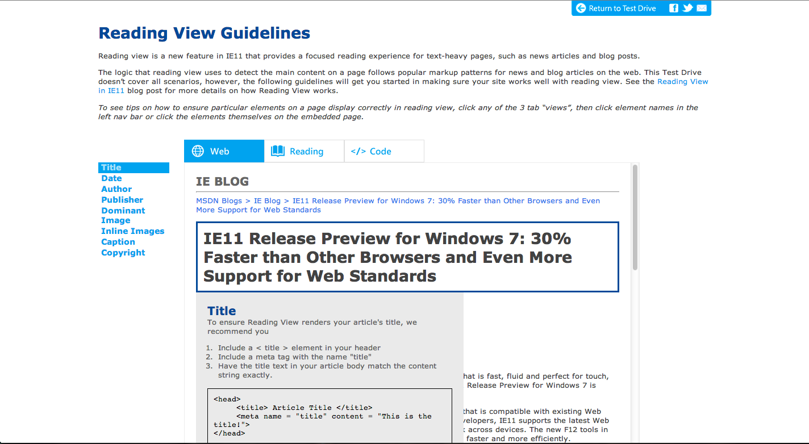

IE11 Reading View
UX Design
UX Program Manager for Internet Explorer 11 Reading View Windows Phone 8.1, and Windows 10.
I storyboarded and contributed to the interaction design of Reading View, a dedicated reading experience for the web designed with a book centric layout. In collaboration with the Microsoft Advanced Reading Technology team, we also developed a new font Sitka to improve readability of the page.
Developed Reading View Test Drive , an interactive website that helps site owners and developers write their page to render beautifully in Reading View
Press
Introducing Reading View in IE11Check out these 8 new kickass features in IE11 on Windows Phone 8.1
Designing Reading View
Reading View extracts article content from websites and lays out the content again for a dedicated reading experience. Due to legal reasons, I cannot include details for the work in Reading View.
These are the important user experience questions I set out to answer:
- Are users interacting with Reading View?
- What type of content do users interact with Reading View?
- How do we design the Reading View layout so users get the best reading experience
- Should Reading View be considered a webpage or an overlay? How does it fit with other common features in a browser such as History?
My process involved working with our UX Researcher to gather direct user feedback and I started an initiative to gather user engagement data. Feel free to contact me directly for more details
More App Screenshots
